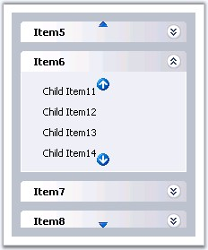

Adding Scrollbars to the control
Scrollbars can be added for the control that allows to traverse through the items when the a large number of items are added to the control. Scroll bars will automatically be added, once the height of the control exceeds the limit specified in the Height property.
Adding Scrollbars to the subpanel
To add scroll bars to the subpanel (i.e.) the child items of a parent, set the ScrollingEnabled property for the parent item in the Designer dialog. Then set the ScrollHeight property so that when the number of items exceeds the given height, scroll bars will appear for the sub-panel.
|
GroupBar Item Property |
Description |
|
ScrollingEnabled |
Specifies the scroll image to use for the down arrow. |
|
ScrollHeight |
Specifies the height, which when exceeded, scroll bars will be applied. |
Customizing Scroll Looks
The default scroll images for the up and down scroll buttons can be changed, by setting the custom image to the ScrollUpImage and ScrollDownImage properties. Also the images can be changed on mouse over, or the same custom image can be set, for the up and down scroll button using ScrollUpImageHover and ScrollDownImageHover, respectively.
To customize the scroll buttons for the sub-panel, set these properties for the corresponding parent items in the Designer dialog.
|
Property |
Description |
|
ScrollDownImage |
Specifies the scroll image to use for the down arrow. |
|
ScrollDownImageHover |
Specifies the scroll image to use for the down arrow on mouse hover. |
|
ScrollUpImage |
Specifies the scroll image to use for the up arrow. |
|
ScrollUpImageHover |
Specifies the scroll image to use for the up arrow on mouse hover. |

Figure 328: Menu with custom scroll images for the control and subpanel
Looks can be applied using css styles to the scroll up / down arrows by defining the looks in style sheets and apply it to the up and down arrows, by setting it to the ScrollDownLook and ScrollUpLook as required.
Looks for the sub-panel scroll arrows can be set by setting these properties for the parent item in the Designer dialog.
|
Property |
Description |
|
ScrollDownLook |
Specifies the class name of the css style settings to use for the down arrow. |
|
ScrollUpLook |
Specifies the class name of the style settings to use for the up arrow. |